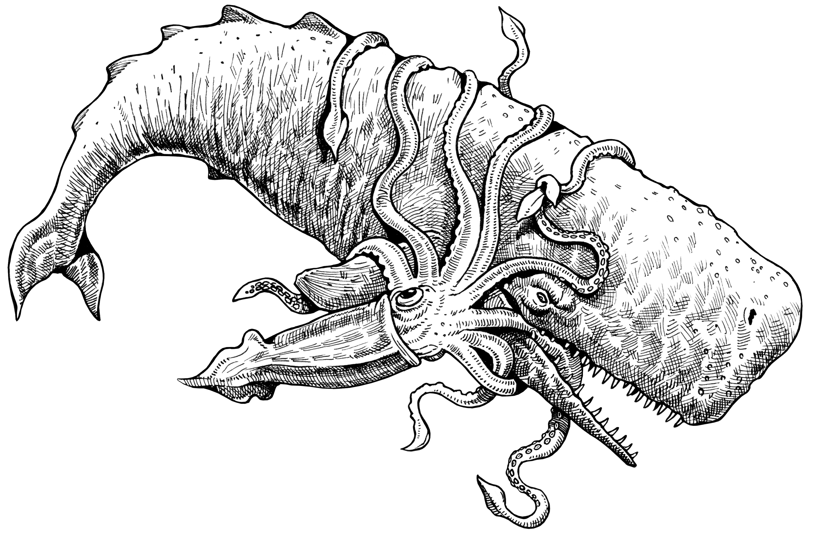
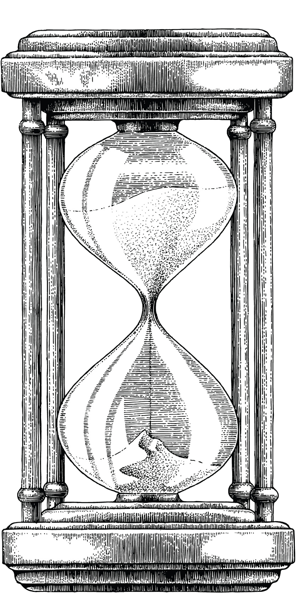

drag the degree to turn finish graduate school!

It was always a dream since childhood to work on the ocean...
Endless fascination of a world that humanity has only explored less than 20% of...
I saw that number as a challenge. I wanted to advance humanity into exploring what lies in the depths of the ocean...
so I spent the first half of my life so far spending brain-shattering hours in of college. Then. Going to back to college to get a doctorate.
drag the degree to turn finish graduate school!

So I began to study whales. Research started small with observations only to gray whales off the shore of the bay area.
drag the object i would bring to whale watch!


Whales were a chance for me to see what happens in the depths, so I had a plan. Measure deep sea whale and document their fights with monsters in the deep.

Pelagic Predator Behavioral Study - Deep Ocean Research Division
Specimen ID: SW-PS-0913-D | Species: Sperm Whale (Physeter macrocephalus)
Observation Classification: Post-Hunt Recovery and Surface Behavior
| Research Category | Observation Data | Notes |
|---|---|---|
| Observation Date | September 13, 2025 | Active feeding season |
| Location Found | 38.214° N, 123.992° W | Off Northern California coast, beyond continental shelf; Known squid hunting region |
| Distance from Shore | 47 nautical miles west of Point Reyes, CA | Deep pelagic zone |
| Water Depth | 2,840 meters | Ideal squid habitat depth |
| Estimated Length | 52.4 ft (16.0 m) | Adult male |
| Estimated Weight | 91,300 lbs (41,400 kg) | Healthy mass for mature bull |
| Estimated Age | 34-42 years | Based on size and skin scarring |
| Sex | Male | Confirmed via physical observation |
| Body Condition | Excellent | High energy reserves |
| Physical Indicator | Recorded Observation | Interpretation |
|---|---|---|
| Fresh suction scars | 17 visible | Recent squid combat |
| Largest scar diameter | 11.8 inches | Indicates large squid encounter |
| Skin abrasion areas | Moderate along rostrum | Likely contact with tentacles |
| Blood traces detected | Minimal | Superficial external injuries only |
| Respiration rate (surface) | 4.8 breaths per minute | Elevated due to recent exertion |
| Surface recovery duration | 18 minutes | Typical post-deep-dive recovery |
| Category | Estimated Value | Notes |
|---|---|---|
| Estimated squid captured | 3 individuals | Based on feeding duration and dive cycles |
| Estimated squid size range | 8-21 ft length | Includes at least one large adult squid |
| Estimated total prey mass consumed | 680 lbs (308 kg) | Significant caloric intake |
| Primary prey type | Giant squid (probable) | Based on scar size and depth |
| Secondary prey type | Large deep-sea squid species | Likely opportunistic capture |
| Combat duration (estimated) | 22-34 minutes | Based on dive telemetry |

Wait aren't you supposed to be a Graphic Designer?
Marine Biology Survey - Northern California Coastal Study
Specimen ID: GW-BA-0426-A | Species: Gray Whale (Eschrichtius robustus)
Gray whales can reach about 45-50 ft long and weigh up to 80,000-90,000 pounds, and feed mainly on bottom-dwelling crustaceans like amphipods and small marine invertebrates. 12 NOAA Fisheries
| Research Category | Observation Data | Notes |
|---|---|---|
| Observation Date | April 26, 2025 | Peak northbound migration period |
| Location Found | 6.2 miles west of Golden Gate Bridge, San Francisco, CA | Typical coastal migration corridor |
| Water Depth | 74 meters | Continental shelf feeding zone |
| Estimated Length | 46.8 ft (14.3 m) | Adult-sized individual |
| Estimated Weight | 72,500 lbs (32,900 kg) | Within healthy adult range |
| Body Condition | Good | Moderate blubber thickness observed |
| Estimated Age | 18-25 years | Based on size and scarring patterns |
| Sex | Female (probable) | Determined by dorsal contour and size |
| Time | Coordinates | Behavior |
|---|---|---|
| 08:12 | 37.798° N, 122.516° W | Surfacing, steady migration |
| 09:03 | 37.821° N, 122.528° W | Slow swimming, possible feeding |
| 09:47 | 37.844° N, 122.539° W | Deep dive, sediment plume visible |
| 10:26 | 37.871° N, 122.554° W | Resumed northward migration |
| Behavior | Frequency | Interpretation |
|---|---|---|
| Surface breathing | Every 3-5 minutes | Normal respiratory pattern |
| Sediment feeding rolls | 3 observed | Active feeding |
| Tail fluking | Moderate | Efficient propulsion |
| Directional travel | Consistent northbound | Migratory movement toward Arctic feeding grounds |